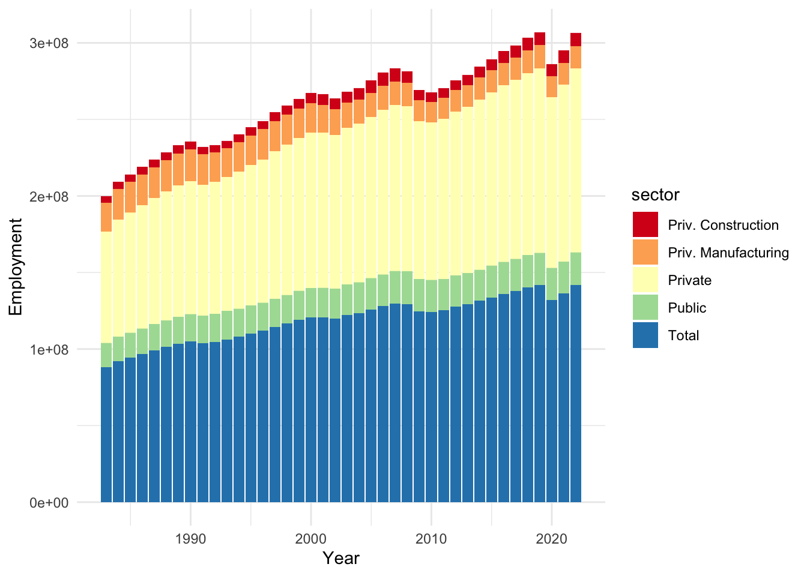

Chapter 10 Example Document: Union Earnings Analysis
Also a zine!
10.1 What’s a Union?
So, what exactly is a union, and why should you care? Basically, unions are groups of workers who come together to protect their rights and fight for better working conditions. Whether it’s fair wages, benefits, or safer workplaces, unions have got your back.
In 2024, with inflation and the cost of living getting out of control, unions are stepping up big time. They’re out here negotiating fair pay and benefits so we don’t get left in the dust. This zine will show you how unions are making a difference right now and why they matter to you, especially your paycheck, and your future.
10.2 Quick History
The story of unions in the United States began in the early 19th century. The first organized unions were formed by skilled tradespeople like shoemakers and carpenters. These early unions set the groundwork for collective bargaining by demanding better wages and shorter working hours.
By the 1880s, major unions like the Knights of Labor emerged, representing workers from various industries and advocating for an eight-hour workday. The American Federation of Labor (AFL), founded in 1886, focused on improving the wages and working conditions of its members through direct negotiations with employers.
These first unions showed that workers could stand up to powerful industrialists and win meaningful victories. Their legacy paved the way for the labor rights we enjoy today, proving that when workers unite, they can achieve lasting change.
10.3 Why a Union?
Ever wonder if being in a union actually makes a difference in your paycheck? Spoiler alert: it totally does. As you can see in the plot Union Wages consistently track better than non-union wages. That’s money left on the table if you aren’t in a Union! The following plot was created with data from (Hirsch and Macpherson 2024) from (TidyTuesday 2023).
But it’s not just about the money. Unions also fight for safer working conditions, better benefits like healthcare and paid time off, and they give workers a voice. Being part of a union means having real power to push back against unfair treatment and make sure you’re getting what you need to thrive—not just survive. Lets focus just on earnings though.
10.4 Recent Union Wins
Restoration of Salary Steps for California State University (CSU) Workers (2024):
Teamsters Local 2010 secured an agreement with CSU, reinstating a salary step system that had been absent for decades. The agreement included an immediate 5% salary increase retroactive to July 1, 2023, and all members reaching their target salary step by July 2025.(teamsters2024?)United Auto Workers (UAW) Strike Achievements (2023):
In fall 2023, the UAW strike against major automakers resulted in substantial pay raises and improved working conditions. It was one of the most significant contract victories since the sit-down strikes of the 1930s. (thenation2023?)Unionization of Volkswagen’s Chattanooga Plant (2024):
The UAW successfully unionized Volkswagen’s Chattanooga, Tennessee, plant in April 2024. This was the first successful unionization at a foreign manufacturer’s U.S. plant in the southern states. (lemonde2024?)Unionization of Blue Bird Bus Factory Workers (2023):
The United Steelworkers won an election at a Blue Bird bus factory in Georgia, unionizing nearly 1,500 predominantly Black workers in 2023.
10.5 Unions are Growing!
As the economy changes so too does Union membership in certain job sectors. What your take away should be is that no matter the type of job you have, it can be unionized! The following plot was created with data from (Hirsch and Macpherson 2024) from (TidyTuesday 2023).

10.6 Getting Involved!
- Join a Union: Check if there is an existing union that represents workers in your industry. The AFL-CIO website (https://aflcio.org) is a great starting point to find affiliated unions.
- Form a Union: If there isn’t one, consider forming your own. The National Labor Relations Board (https://www.nlrb.gov) provides resources to help workers understand their rights and the steps involved in unionizing.
- Connect with Organizers: The United Electrical, Radio, and Machine Workers of America (UE) has guides on forming a union and can connect you with experienced organizers (https://www.ueunion.org).
- Get Educated: Websites like Labor Notes (https://labornotes.org) offer valuable information about union organizing, labor rights, and how to take action.
- Reach Out to Local Chapters: Look for local worker centers or community organizations that support unionization efforts. They can be a great source of advice and resources.
- Communication Workers of America (CWA) – CWA represents tech and telecommunications workers and has been actively organizing workers in the tech sector, including campaigns at Google and other tech companies. More information can be found here: https://cwa-union.org.